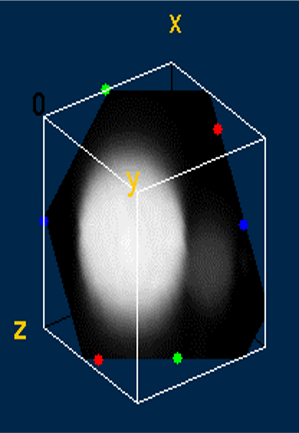
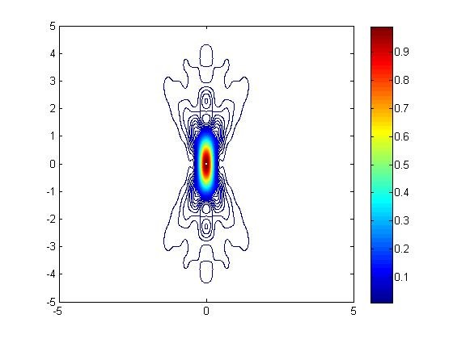
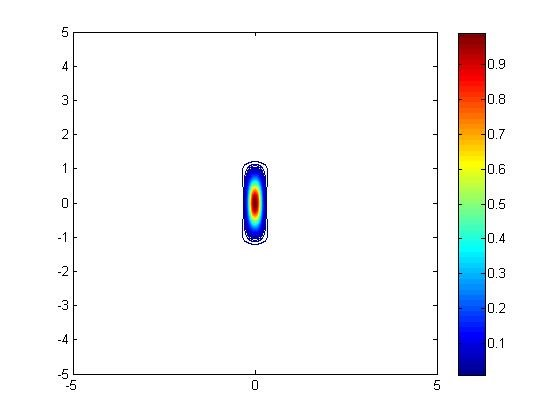
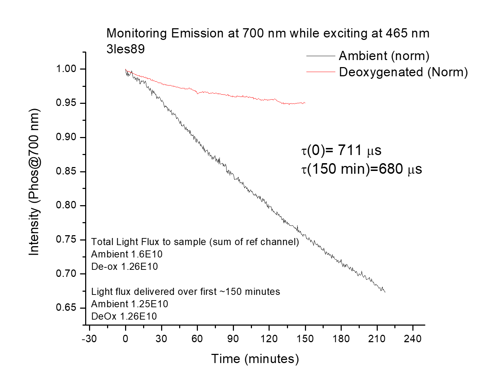
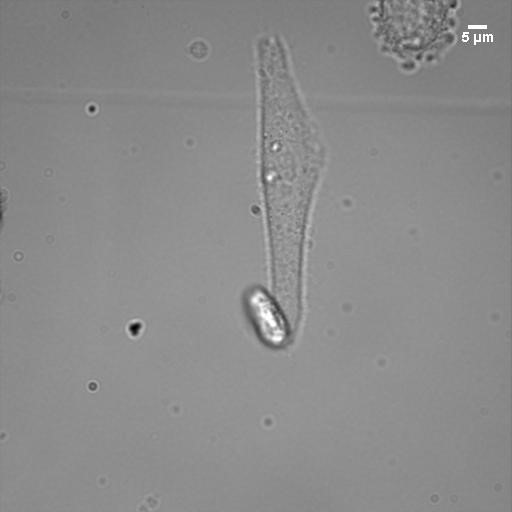
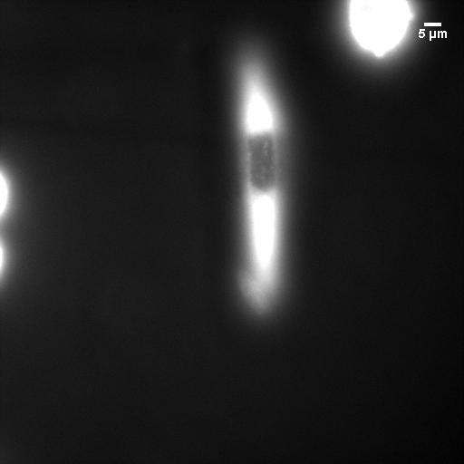

The Vinogradov Lab at the University of Pennsylvania is a multi-disciplinary group that develops new molecules and instrumentation for analyte detection and imaging. My work focused on developing a new two-photon lifetime imaging microscopy techniques and photophysical characterization of new probe molecules.
Development of Two-Photon Phosphorescence Lifetime Imaging Microscope
I coupled ultrafast laser spectroscopy techniques with two-photon microscopy to create a novel phosphorescence lifetime imaging microscope. This method allows the optical sectioning of 3D samples while also obtaining information about the local chemical environment. Using this instrument, I obtained the first 3D phosphorescent lifetime and intensity images. These images were of an oxygen-sensing probe encapsulated in a polymersome. Phosphorescent molecules glow more or less intensely based on the amount of oxygen in the area, so they can be used to measure local oxygen concentrations.

Two-photon microscopy achieves super-resolution through a contracted point spread function of excitation compared to one-photon resolution. While the resolution was fairly well understood for fluorescent probes, the novel phosphorescent probes developed by the Vinogradov lab had additional properties (emission lifetimes that are several orders of magnitude longer than for fluorophores) that could impact resolution. I simulated the point spread function with Matlab to determine the resolution under various operating conditions.


General Photophysical Studies of Novel Probe Molecules
I measured various photophysical properties of probe molecules using both femtosecond spectroscopy and conventional steady-state techniques for absorption and emission. In addition, I measured the photostability of many probes- the best probe is no good if it is degraded by room light before you even get to the microscope!

In photophysics, models for various processes have often been derived mathematically from fundamental principles or experimentally validated in other systems. Fitting the data then becomes simpler since you only have to fit against a few equations. However, fitting parameters are related to the intrinsic properties of molecules and materials, so it is vital to ensure you are fitting with the correct model. Sometimes, a poorer fit to a more scientifically defensible model is more correct than a better fit to an invalid model. Lots of cross-checking and additional experimentation are needed beyond just fitting.
In Vitro Imaging
The probe molecules were developed for in vitro and in vivo use. Lots of fundamental questions about cellular functioning remain unanswered due to the lack of high-resolution data. Is there an oxygen gradient within a cell as the mitochondria consume oxygen? How exactly do zinc levels change as insulin is released?
I collaborated with multiple groups at the University of Pennsylvania on the problem of loading our probes into the cell. At one point, I collaborated with research groups from every experimental school at Penn- Arts & Science, Medicine, Veterinary Medicine, and Engineering! We worked with a variety of cell lines- HeLa, fibroblasts, and macrophages. I did much of the cell culture myself. Various loading techniques were tested, such as microporation, transfection agents, scrape loading, endocytosis of vesicles, and polymersomes decorated with transfection agents. I would then characterize the probe within the cell using Two-Photon Phosphorescent Lifetime Imaging. Generally, the molecules behaved well, but often, the loading process led to many dead cells.


Center for Oxygen Microscopic Imaging University of Aarhus
I spent two months at the University of Aarhus in Denmark working on singlet oxygen imagining. I also studied the cytotoxic effects of fluorescent probes developed in the Vinogradov lab. I learned and performed patch-clamp technique (whole-cell electrophysiological measurements) to study the effect of localized reactive oxygen species generation on ion channel function in mouse neurons. In addition, I shared my simulations on excitation volume and resolution, allowing them to understand the trade-off between resolution and signal-to-noise. Many experiments were performed at higher powers, leading to better signal to noise but degraded resolution. The simulations helped clarify exactly how much resolution was lost.
Selected Publications
Devor, A., Sakadžić, S; Yaseen, M. A.; Roussakis,E.; Tian, P.; Slovin, H.; Vanzetta, I.; Teng, I.; Saisan, P. A.; Sinks, L. E.; Dale, A. M.; Vinogradov, S.V.; Boas, D.A. Functional imaging of cerebral oxygenation with intrinsic optical contrast and phosphorescent probes, Optical Imaging of Neocortical Dynamics 2014
Pedersen, B. W.; Sinks, L. E.; Breitenbach, T.; Schack, N. B.; Vinogradov, S. A.; Ogilby, P. R. Single cell responses to spatially controlled photosensitized production of extracellular singlet oxygen. Photochemistry and Photobiology 2011, 87, 1077–1091.
Sinks, L. E.; Robbins, G. P.; Roussakis, E.; Troxler, T.; Hammer, D. A.; Vinogradov, S. A., Two-Photon Microscopy of Oxygen: Polymersomes as Probe Carrier Vehicles. J. Phys. Chem. B, 2010, 114(45), 14373-14382.
Sinks, L. E.; Roussakis, E.; Esipova Tatiana, V.; Vinogradov Sergei, A., Synthesis and calibration of phosphorescent nanoprobes for oxygen imaging in biological systems. Journal of visualized experiments : JoVE 2010, (37).
Selected Posters and Presentations
Sinks, L. E.; Finikova, O. S.; Vinogradov, S. A. Oxygen Microscopy with Two-Photon-Enhanced Phosphorescent Nanoprobes. In Novel Techniques in Microscopy; Optical Society of America, 2009 presented at the Optical Society of America Spring Congress: Novel Techniques in Microscopy Vancouver, Canada (talk)
Sinks, L. E. and Vinogradov, S. A. Oxygen Microscopy with Two-Photon-Enhanced Phosphorescent Nanoprobes at Howard Hughes Medical Institute Janelia Research Campus’s Symposium on Multiphoton Imaging: The Next 6X10^23 Femtoseconds, April 3 - 6, 2011